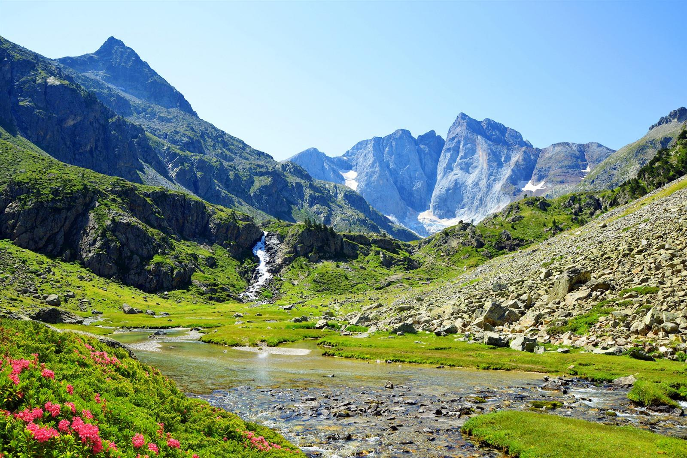

|

|
Pyrenees
The Pyrenees is a majestic mountain range that forms a natural border between France and Spain. It offers breathtaking landscapes, hiking trails, and ski resorts.
Some notable features and activities in the Pyrenees include:
- Hiking and Trekking: The Pyrenees offer numerous hiking trails for all skill levels, ranging from easy walks to challenging multi-day treks.
- Skiing and Winter Sports: The mountain range is home to several ski resorts, providing excellent opportunities for skiing, snowboarding, and other winter activities.
- Natural Parks and Reserves: The Pyrenees are known for their biodiversity and are home to several natural parks and reserves, such as the Ordesa y Monte Perdido National Park and the Aigüestortes i Estany de Sant Maurici National Park.
- Cultural Heritage: The region has a rich cultural heritage, with charming mountain villages, historic churches, and ancient ruins scattered throughout the range.
Whether you're an outdoor enthusiast, a nature lover, or simply seeking stunning views, the Pyrenees offer a perfect destination for adventure and relaxation. From hiking and skiing to exploring the local culture and cuisine, the Pyrenees have something to offer for everyone.
|